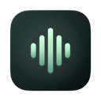
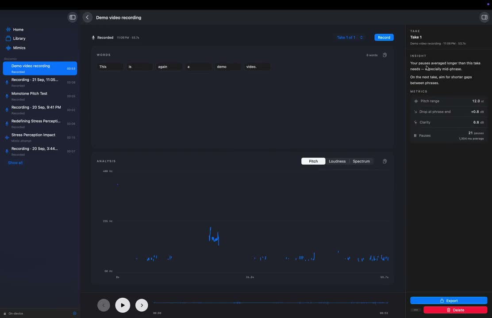
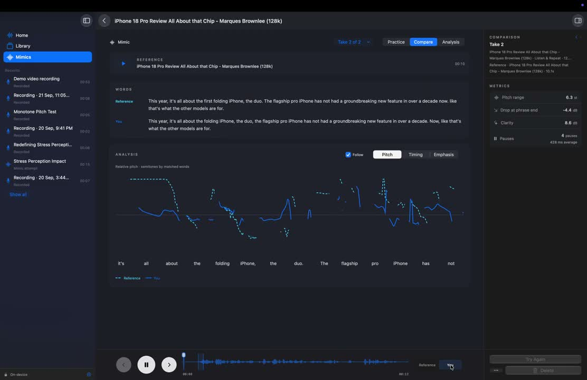
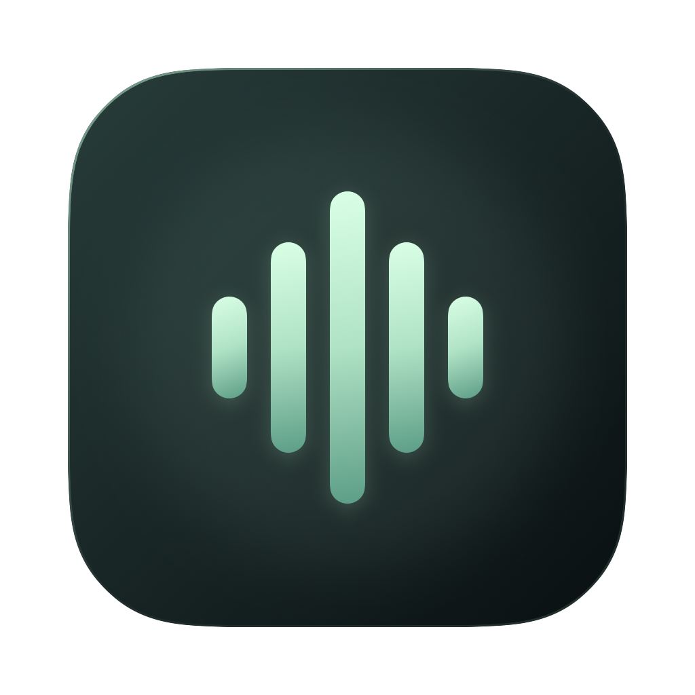

Record with your mic
Rehearse a talk, pitch, or interview out loud.

voice coach. Download for MacA private voice practice studio for Mac
Record a take. Get one next step when pauses or pitch stand out. Try again, or practice against a reference.
macOS 26+ · No account required
No setup ritual. Pick the source that fits your practice.
Rehearse a talk, pitch, or interview out loud.
Grab what’s playing on your Mac: a talk, podcast, or browser clip.
Bring in an audio file you’re practicing against.
Playing YouTube or a podcast in a browser? Use Capture Mac audio. There’s no YouTube URL import.
Voice Coach keeps the next move small. When an acoustic pattern stands out, you get one observation and one thing to try.

Replay the moment, scan the timeline, and keep moving.
“Here’s the idea. What if we made space to practice?”
No score to chase. Just another take with a clearer aim.
Interactive walkthrough with real app footage and illustrative practice content.
Bring in a reference from a file or capture Mac audio. Listen, imitate, and compare how the words land across pitch, timing, and emphasis.

Recordings, analysis, and transcripts stay on this Mac. No account, no upload, no cloud processing.
LOCAL BY DESIGNNo. It’s a private practice studio. Core Insights use acoustic rules (pauses and pitch). The practice loop does not require sending your voice to a cloud AI service.
No. Recordings, acoustic analysis, and supported transcription stay on your Mac. Voice Coach does not need an account.
It analyzes acoustic signals such as pauses, pitch, loudness, and voice quality. The goal is to show evidence and one practical next step, not to grade your personality or accent.
Mimic lets you practice against one reference. Listen to it, record your attempt, then compare timing, pitch, and emphasis before trying again.
No. Voice Coach is a practice tool. Its acoustic signals are not a diagnosis, treatment, or substitute for a qualified professional.
The current public release is v3.2.0 for macOS 26+. It is ad-hoc signed and is not Apple-notarized yet, so macOS may block the first launch. The download details explain the steps.
Free while in early access. No account required.

The current release is ad-hoc signed and not Apple-notarized.
Microphone access is needed to record. System audio access is needed when you capture Mac audio.
Optional on-device transcription needs a one-time ~714 MB download. Your recordings stay on this Mac.